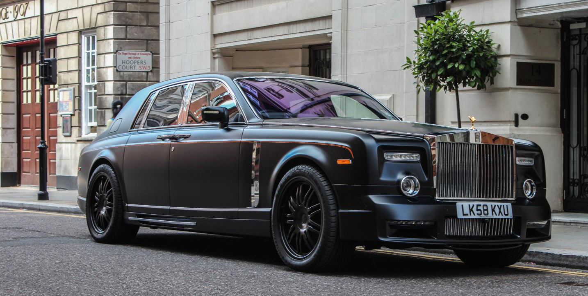

Rolls-Royce-ul de 1 milion de dolari

MANSORY's aerodynamic package, exclusively designed for the Rolls-Royce Phantom, sets new standards for quality and visual appearance. On the one hand, the integrated chassis components fit perfectly into the original design, while on the other hand, they set distinctive accents without causing obtrusiveness. Front and rear apron, side skirts, as well as the new exterior mirrors with integrated turn signals refine the noble appearance even more. At the same time, the add-on parts optimise the air flow across the vehicle's silhouette, which indeed affects the handling in a positive way. The necessary additional downforce is provided by rear spoiler that seamlessly flows into the contours of the luggage boot lid.